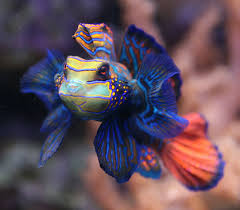
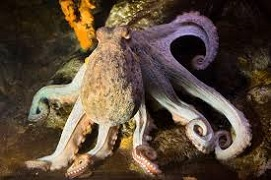

Ultimas noticias

Nombre científico: Synchiropus splendidus
Familia: Callionymidae
Hábitat: Arrecifes de coral del océano Pacífico occidental.
Distribución: Se encuentra cerca de países como Filipinas, Indonesia, Japón y Australia.
Es considerado uno de los peces más coloridos del mundo,presenta tonos azules, verdes, naranjas y amarillos muy brillantes,mide entre 6 y 8 centímetros de longitud,su piel produce una capa de mucosidad que ayuda a protegerlo de enfermedades y parásitos.
Su nombre proviene de los colores brillantes de las antiguas túnicas de los mandarines chinos,a diferencia de la mayoría de los peces, el color azul del pez mandarín es un pigmento real y no un efecto óptico,es uno de los peces ornamentales más apreciados en acuarios marinos.

La tortuga carey pertenece a la familia Cheloniidae, que incluye a la mayoría de las tortugas marinas de caparazón duro. Esta familia agrupa especies adaptadas a la vida en los océanos y que desempeñan funciones importantes en los ecosistemas marinos
Habita en mares tropicales y subtropicales de los océanos Atlántico, Índico y Pacífico. Se encuentra principalmente en arrecifes de coral, lagunas costeras, manglares y zonas rocosas cercanas a la costa. Las hembras salen a las playas arenosas para poner sus huevos.
La tortuga carey es principalmente carnívora. Su alimento favorito son las esponjas marinas, aunque también consume anémonas, medusas, algas, corales blandos, moluscos y pequeños crustáceos. Su pico estrecho y curvado le permite alcanzar alimento en las grietas de los arrecifes de coral.
Su nombre "carey" proviene del material obtenido de su caparazón, muy apreciado antiguamente para fabricar objetos decorativos.

El pulpo común (Octopus vulgaris) vive en aguas saladas tropicales y templadas de todo el mundo. Habita principalmente en el mar Mediterráneo, el Atlántico oriental y las costas del Pacífico. Prefiere profundidades entre la superficie y los 150 metros, habitando fondos arenosos, rocosos y arrecifes de coral
Pertenece a la familia Octopodidae, que incluye a numerosas especies de pulpos distribuidas por los océanos del mundo. Es un molusco cefalópodo, grupo al que también pertenecen los calamares y las sepias.
Se alimenta principalmente de cangrejos, camarones, langostas, moluscos, peces pequeños y otros invertebrados marinos. Utiliza sus ocho brazos con ventosas para capturar a sus presas y su pico córneo para romper caparazones y conchas.
Tiene tres corazones y sangre de color azul debido a una proteína llamada hemocianina.